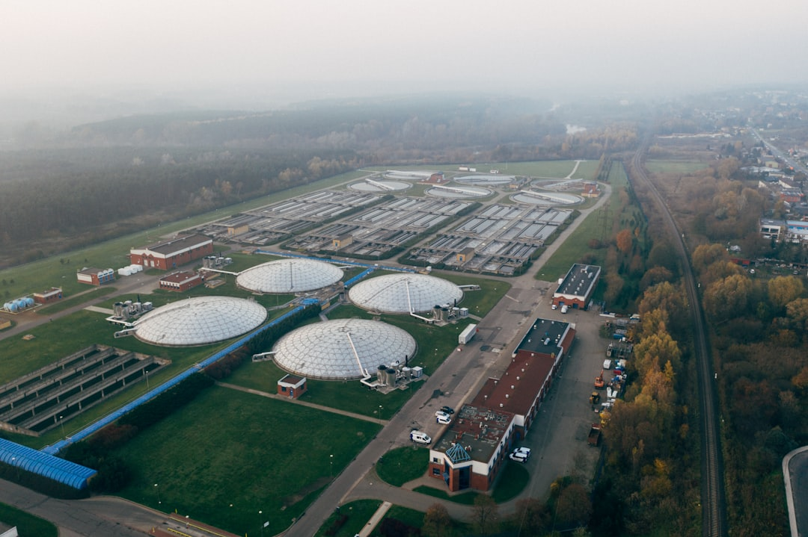

소부장 1700억, AI 풀스택 선언…실제 조달 병목 3곳은 여기다

산업통상자원부는 2025년 소부장(소재·부품·장비) 지원 예산을 1700억 원으로 확대하고 방산·희토류·AI 반도체·디스플레이·이차전지·바이오 6개 분야로 재편했다. 동시에 이재명 대통령은 AI·반도체·데이터센터를 국가전략 산업 삼각축으로 공식 선언하며 총 1600조 원 규모 메가프로젝트와의 연계를 예고했다.
그런데 1700억 원 배분 내역을 보면 전략광물 회수 공정 R&D 예산은 명시되지 않았다. 고려아연이 갈륨 연 15.5t(2028년 목표)·게르마늄 회수 공정을 추진 중이지만, 공정 스케일업에 필요한 전해정련·증류 설비 국산화 자금은 민간 부담으로 남아 있다. 소재 생산 확대를 선언해 놓고 가공 설비 투자 체계가 빠진 구조다.
AI 데이터센터 풀스택 전략의 또 다른 병목은 고순도 특수가스다. 반도체 식각·증착 공정에 쓰이는 불화수소(HF)·삼불화질소(NF₃)·육불화텅스텐(WF₆)의 국산화율은 2024년 기준 각각 약 55%, 70%, 40% 수준이며, 나머지는 일본·독일 의존이다. 삼성전자·SK하이닉스의 파운드리·HBM 라인 동시 증설이 현실화되면 특수가스 조달 마진이 구매 협상력을 가르는 변수로 부상한다.
세 번째 병목은 전력이다. 제12차 전력수급기본계획(전기본) 초안은 AI 데이터센터와 반도체 팹 동시 확장 시나리오에서 2030년 최대 전력 수요를 142GW로 추산했는데, 현재 확정된 신규 발전 용량으로는 20GW 이상 부족하다는 분석이 나온다. 소재 공장도 전력 집약 시설이므로, 전기본 미반영 리스크는 소부장 투자 실효성과 직결된다.
이번 소부장 1700억 원 예산 확대는 정책 신호로는 명확하지만, 실제 공급망 회복력으로 연결되려면 '소재 생산 → 가공 설비 → 고순도화 → 수요처 인증'이라는 4단계 밸류체인 전체에 자금이 흘러야 한다. 현재 구조는 R&D 단계에 집중돼 있고, 양산 스케일업에 필요한 설비 투자·금융 지원 체계는 미완성이다.
공급망 인텔리전스 측면에서 보면, 정책 발표 이후 실제 수혜가 발생하는 시차는 통상 18~36개월이다. 지금 투자자와 구매담당자가 주목해야 할 것은 '정책 선언'이 아니라 '병목 구간에 실제 설비 발주가 나오는 시점'이다. 그 시점이 소부장 관련주 실적과 소재 납품 단가 변화의 선행 지표가 된다.
국내 특수가스 제조 3사인 SK스페셜티(NF₃ 세계 시장점유율 약 30%)·후성(HF 계열)·OCI(고순도 WF₆ 진입)는 데이터센터·HBM 라인 동시 증설 국면에서 조달 물량 협상력이 강해진다. 1700억 원 정책 자금이 특수가스 국산화 품목 인증에 연결되면 추가 수혜가 생긴다.
전해정련·증류 설비 분야에서는 고려아연의 갈륨·게르마늄 공정 스케일업에 설비를 납품할 국내 화학 플랜트 엔지니어링 기업(에코프로이엠, 한화임팩트 계열)이 간접 수혜 구간에 들어온다. 2028년 양산 목표 역산 시 설비 발주는 2026년 상반기가 실질 기준선이다.
전력 병목이 해소되지 않으면 반도체 팹·데이터센터 신규 라인의 가동 시점이 지연되고, 이는 소부장 수요 확대 속도를 끌어내린다. 전기본 미반영 시나리오에서 2030년 이전 20GW 부족 구간이 현실화되면, 소재 공장 신설 인허가도 전력 확보 여부에 묶이게 된다.
가공 설비 국산화 자금 없이 소재 생산만 앞세우면, 고려아연이 갈륨 원소재를 생산하더라도 고순도(6N 이상) 정제 단계에서 일본·독일 설비에 다시 의존하는 구조가 반복된다. 실제로 2023~2024년 게르마늄 규제 이후 국내 정제 용량이 부족해 원소재를 해외로 보내 정제 후 재수입한 사례가 현장에서 확인됐다.
구매담당자라면 지금 당장 특수가스 공급 계약의 '국산 비율 조항'을 재검토하라. 정책 자금이 국산화 인증 품목 우선 구매 조건으로 연결될 가능성이 높고, 이를 미리 계약에 반영한 기업이 원가 구조에서 유리해진다.
개인 투자자라면 소부장 ETF 내 편입 종목 중 특수가스·전해정련 설비·고순도 화학 소재 기업의 비중을 확인하라. 정책 발표 시점보다 실제 설비 발주(공시 기준)가 주가 움직임의 실질 트리거다. 2026년 상반기 이전 고려아연 관련 설비 발주 공시가 나오면 그게 시그널이다.
실제 조달 현장에서는 — 소재 생산 선언 이후 가공 설비 발주까지 평균 14~18개월의 공백이 생기고, 그 사이에 해외 정제 의존이 재발하는 패턴이 반복된다. 2026년 설비 발주 시점에 앞서 국내 고순도 정제 역량을 보유한 파트너와의 장기 위탁 계약을 선제적으로 체결하는 것이 공급 리스크를 최소화하는 현실적 방법이다.
이 포스팅은 쿠팡 파트너스 활동의 일환으로 수수료를 제공받습니다.